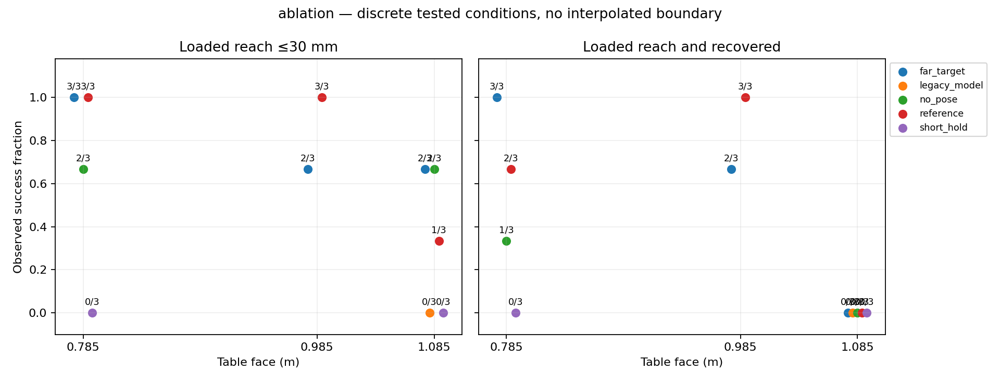
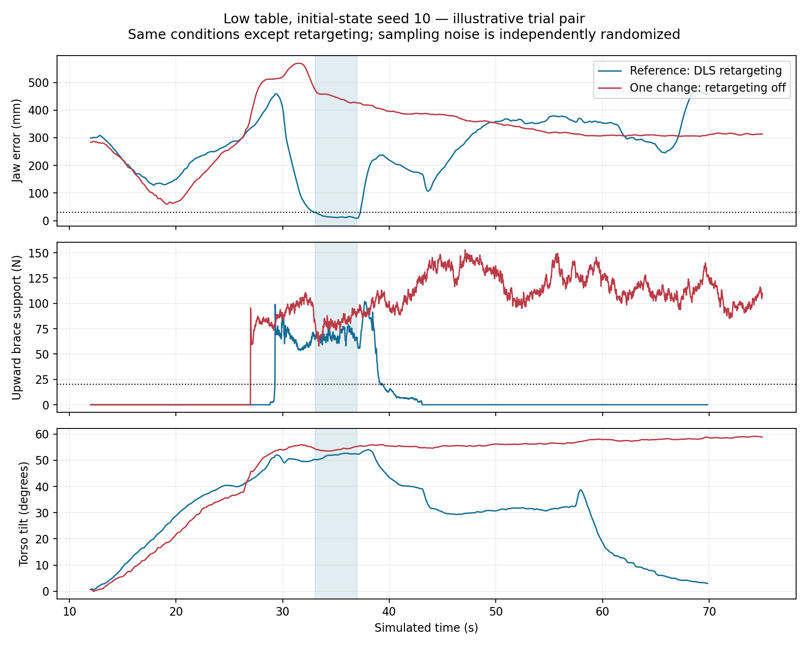

Updated 2026-09-09T07:48:00 local · 33 completed new episodes · simulation only
Ablation complete; adaptive testing in progress. The reference achieved precise loaded reach in 3/3 low, 3/3 nominal, and 1/3 tall-table trials. Recovery remains weaker. The next controlled test changes only the existing brace-pitch tracking switch, targeting backward falls during approach. No robustness recipe has yet passed fresh confirmation.
Each ablation changes exactly one factor relative to the reference recipe: synchronized planning model, existing DLS brace retargeting, 0.40 m reach depth, and five-second reach gate. Depth is measured from the near edge; lateral and vertical offsets remain −0.04 m and +0.15 m. A closer target changes task difficulty; it is not counted as an optimizer improvement. Initial-state seeds 10–12 are interleaved in a frozen randomized order. Sampler randomness remains uncontrolled; these are blocked trials, not paired random-number experiments. All use six threads, 167 simulated planning Hz, 75 s episodes and the same physics model.
The passive full-state recorder and independent native evaluator share the benchmark’s exact MuJoCo library. The previous Python package reported the same version string but used an incompatible model format. New metrics reconstruct FK and forces together from pre-integration qpos, qvel, control and warm-start. Model synchronization is checked from saved binary models.
Primary success: two continuous observed seconds in reach phase, error ≤30 mm, upward normal left-arm/table support ≥20 N, trunk/table and other robot/table loads each <10 N, pelvis >0.8 m; no episode fall and whole-episode pelvis ≥0.65 m. The 70 mm result is secondary. Full-task success also requires sequence completion and a two-second final standing interval with tilt ≤15°, pelvis >0.8 m, and brace load <10 N. Contact/force data are sampled at 50 Hz; unsampled-time stability is not certified.
Frozen protocol · Randomized ablation manifest · Exact engine/build identities · Machine-readable counts
Sampling-boundary caveat: a two-second strategy gate can leave only 1.98 s between the first and last passing 50 Hz samples. Such runs fail the conservative observed two-second criterion here; a one-sample sensitivity count is provided below. This must not be interpreted as proof that the physical hold was shorter than two seconds. The primary 30 mm criterion is unchanged.
Exploration and fresh confirmation are separate. Intervals are Wilson 95% intervals for the ≤30 mm success fraction under the tested condition; they assume independent trials and do not certify a continuous height range or disturbance robustness. Three successes still give a lower bound of only about 44%.
| Stage | Arm | Face m | N | ≤30 mm | 95% interval | ≤70 mm | Full task | Ladder | Falls |
|---|---|---|---|---|---|---|---|---|---|
| ablation | far_target | 0.785 | 3 | 3/3 | 44%–100% | 3/3 | 3/3 | 3/3 | 0 |
| ablation | far_target | 0.985 | 3 | 2/3 | 21%–94% | 3/3 | 2/3 | 3/3 | 0 |
| ablation | far_target | 1.085 | 3 | 2/3 | 21%–94% | 2/3 | 0/3 | 2/3 | 1 |
| ablation | legacy_model | 1.085 | 3 | 0/3 | 0%–56% | 0/3 | 0/3 | 0/3 | 3 |
| ablation | no_pose | 0.785 | 3 | 2/3 | 21%–94% | 2/3 | 1/3 | 1/3 | 0 |
| ablation | no_pose | 1.085 | 3 | 2/3 | 21%–94% | 2/3 | 0/3 | 2/3 | 1 |
| ablation | reference | 0.785 | 3 | 3/3 | 44%–100% | 3/3 | 2/3 | 2/3 | 0 |
| ablation | reference | 0.985 | 3 | 3/3 | 44%–100% | 3/3 | 3/3 | 3/3 | 0 |
| ablation | reference | 1.085 | 3 | 1/3 | 6%–79% | 1/3 | 0/3 | 1/3 | 2 |
| ablation | short_hold | 0.785 | 3 | 0/3 | 0%–56% | 0/3 | 0/3 | 2/3 | 0 |
| ablation | short_hold | 1.085 | 3 | 0/3 | 0%–56% | 0/3 | 0/3 | 2/3 | 1 |
One-sample sensitivity (same safety requirements, allowing 1.98 s observed dwell): ablation/far_target/0.785: 30 mm 3/3, 70 mm 3/3, ablation/far_target/0.985: 30 mm 2/3, 70 mm 3/3, ablation/far_target/1.085: 30 mm 2/3, 70 mm 2/3, ablation/legacy_model/1.085: 30 mm 0/3, 70 mm 0/3, ablation/no_pose/0.785: 30 mm 2/3, 70 mm 2/3, ablation/no_pose/1.085: 30 mm 2/3, 70 mm 2/3, ablation/reference/0.785: 30 mm 3/3, 70 mm 3/3, ablation/reference/0.985: 30 mm 3/3, 70 mm 3/3, ablation/reference/1.085: 30 mm 1/3, 70 mm 1/3, ablation/short_hold/0.785: 30 mm 0/3, 70 mm 1/3, ablation/short_hold/1.085: 30 mm 0/3, 70 mm 2/3
Each difference is alternative minus reference at the same height in this experiment. These are conditional effects in the reference context; the design does not identify all interactions or justify adding gains across factors. The legacy-model arm deliberately reintroduces a benchmark defect and is not a controller candidate.
| One change | Face | Alternative ≤30 mm | Reference ≤30 mm | Observed difference | Full-task difference |
|---|---|---|---|---|---|
| far_target | 0.785 | 3/3 | 3/3 | +0 percentage points | +33 percentage points |
| far_target | 0.985 | 2/3 | 3/3 | -33 percentage points | -33 percentage points |
| far_target | 1.085 | 2/3 | 1/3 | +33 percentage points | +0 percentage points |
| legacy_model | 1.085 | 0/3 | 1/3 | -33 percentage points | +0 percentage points |
| no_pose | 0.785 | 2/3 | 3/3 | -33 percentage points | -33 percentage points |
| no_pose | 1.085 | 2/3 | 1/3 | +33 percentage points | +0 percentage points |
| short_hold | 0.785 | 0/3 | 3/3 | -100 percentage points | -67 percentage points |
| short_hold | 1.085 | 0/3 | 1/3 | -33 percentage points | +0 percentage points |


Every completed run is retained. Model force limits are not independently verified hardware torque limits. Maximum foot displacement includes the whole episode and cannot by itself distinguish foot roll from sliding. Joint-limit and penetration peaks are diagnostics, not claims of mechanically exact contact. Inspect the replay and phase traces before interpreting motion quality.
| Run | Strict | 70 mm | Full | 30 mm dwell s | Outcome | Joint limit max ° | Joint speed max rad/s | Force-limit fraction | Foot motion max mm | Contact penetration max mm | Data |
|---|---|---|---|---|---|---|---|---|---|---|---|
| ablate_far_target_h0785_s10 | True | True | True | 4.46 | complete | 0.00 | 1.35 | 1.000 | 92.7 | 2.9 | score · trace · command · strategy · log |
| ablate_far_target_h0785_s11 | True | True | True | 2.32 | complete | 0.00 | 2.50 | 0.972 | 38.9 | 3.1 | score · trace · command · strategy · log |
| ablate_far_target_h0785_s12 | True | True | True | 4.20 | complete | 0.00 | 1.68 | 1.000 | 69.0 | 3.2 | score · trace · command · strategy · log |
| ablate_far_target_h0985_s10 | False | True | False | 1.90 | precise dwell <2 s | 0.00 | 1.60 | 1.000 | 94.9 | 6.6 | score · trace · command · strategy · log |
| ablate_far_target_h0985_s11 | True | True | True | 4.22 | complete | 0.15 | 0.97 | 1.000 | 121.5 | 4.5 | score · trace · command · strategy · log |
| ablate_far_target_h0985_s12 | True | True | True | 4.20 | complete | 0.00 | 1.14 | 1.000 | 46.2 | 5.3 | score · trace · command · strategy · log |
| ablate_far_target_h1085_s10 | False | False | False | 0.00 | fall | 0.00 | 1.40 | 0.724 | 145.3 | 6.5 | score · trace · command · strategy · log |
| ablate_far_target_h1085_s11 | True | True | False | 4.36 | terminal contact/tilt | 0.18 | 1.89 | 0.857 | 132.3 | 9.7 | score · trace · command · strategy · log |
| ablate_far_target_h1085_s12 | True | True | False | 4.74 | terminal contact/tilt | 0.00 | 1.31 | 0.935 | 123.7 | 10.8 | score · trace · command · strategy · log |
| ablate_legacy_model_h1085_s10 | False | False | False | 0.00 | fall | 0.10 | 1.47 | 0.737 | 145.3 | 7.6 | score · trace · command · strategy · log |
| ablate_legacy_model_h1085_s11 | False | False | False | 0.00 | fall | 0.30 | 1.73 | 0.744 | 156.4 | 8.7 | score · trace · command · strategy · log |
| ablate_legacy_model_h1085_s12 | False | False | False | 0.00 | fall | 0.15 | 1.43 | 0.749 | 165.4 | 14.5 | score · trace · command · strategy · log |
| ablate_no_pose_h0785_s10 | False | False | False | 0.00 | reach_miss | 0.01 | 0.95 | 1.000 | 26.4 | 3.0 | score · trace · command · strategy · log |
| ablate_no_pose_h0785_s11 | True | True | False | 12.82 | recovery_stall | 0.00 | 1.32 | 1.000 | 157.6 | 3.5 | score · trace · command · strategy · log |
| ablate_no_pose_h0785_s12 | True | True | True | 2.46 | complete | 0.04 | 1.08 | 1.000 | 154.2 | 3.3 | score · trace · command · strategy · log |
| ablate_no_pose_h1085_s10 | True | True | False | 4.32 | terminal contact/tilt | 0.12 | 0.83 | 0.705 | 91.9 | 8.7 | score · trace · command · strategy · log |
| ablate_no_pose_h1085_s11 | False | False | False | 0.00 | fall | 0.00 | 1.51 | 0.715 | 162.3 | 10.8 | score · trace · command · strategy · log |
| ablate_no_pose_h1085_s12 | True | True | False | 3.10 | terminal contact/tilt | 0.06 | 0.78 | 0.807 | 109.5 | 8.9 | score · trace · command · strategy · log |
| ablate_reference_h0785_s10 | True | True | True | 3.90 | complete | 0.00 | 0.79 | 1.000 | 103.2 | 3.1 | score · trace · command · strategy · log |
| ablate_reference_h0785_s11 | True | True | False | 14.00 | recovery_stall | 0.00 | 1.66 | 1.000 | 109.2 | 3.0 | score · trace · command · strategy · log |
| ablate_reference_h0785_s12 | True | True | True | 2.40 | complete | 0.00 | 1.60 | 1.000 | 46.0 | 2.8 | score · trace · command · strategy · log |
| ablate_reference_h0985_s10 | True | True | True | 3.80 | complete | 0.08 | 1.11 | 1.000 | 88.1 | 3.7 | score · trace · command · strategy · log |
| ablate_reference_h0985_s11 | True | True | True | 13.20 | complete | 0.05 | 2.22 | 1.000 | 144.1 | 3.3 | score · trace · command · strategy · log |
| ablate_reference_h0985_s12 | True | True | True | 3.32 | complete | 0.00 | 1.47 | 1.000 | 60.4 | 5.0 | score · trace · command · strategy · log |
| ablate_reference_h1085_s10 | True | True | False | 4.14 | terminal contact/tilt | 0.00 | 1.38 | 0.692 | 116.5 | 7.5 | score · trace · command · strategy · log |
| ablate_reference_h1085_s11 | False | False | False | 0.00 | fall | 0.22 | 1.52 | 0.760 | 176.4 | 8.2 | score · trace · command · strategy · log |
| ablate_reference_h1085_s12 | False | False | False | 0.00 | fall | 0.06 | 1.26 | 0.827 | 165.8 | 9.3 | score · trace · command · strategy · log |
| ablate_short_hold_h0785_s10 | False | False | False | 1.10 | precise dwell <2 s | 0.00 | 1.50 | 1.000 | 36.4 | 2.8 | score · trace · command · strategy · log |
| ablate_short_hold_h0785_s11 | False | False | False | 0.00 | reach_miss | 0.00 | 1.83 | 1.000 | 54.6 | 2.4 | score · trace · command · strategy · log |
| ablate_short_hold_h0785_s12 | False | False | False | 0.00 | reach_miss | 0.00 | 1.19 | 1.000 | 34.5 | 3.0 | score · trace · command · strategy · log |
| ablate_short_hold_h1085_s10 | False | False | False | 0.94 | terminal contact/tilt | 0.00 | 1.14 | 0.673 | 105.8 | 9.1 | score · trace · command · strategy · log |
| ablate_short_hold_h1085_s11 | False | False | False | 0.00 | fall | 0.14 | 1.47 | 0.760 | 182.9 | 9.7 | score · trace · command · strategy · log |
| ablate_short_hold_h1085_s12 | False | False | False | 0.18 | precise dwell <2 s | 0.06 | 1.56 | 0.799 | 119.0 | 9.5 | score · trace · command · strategy · log |